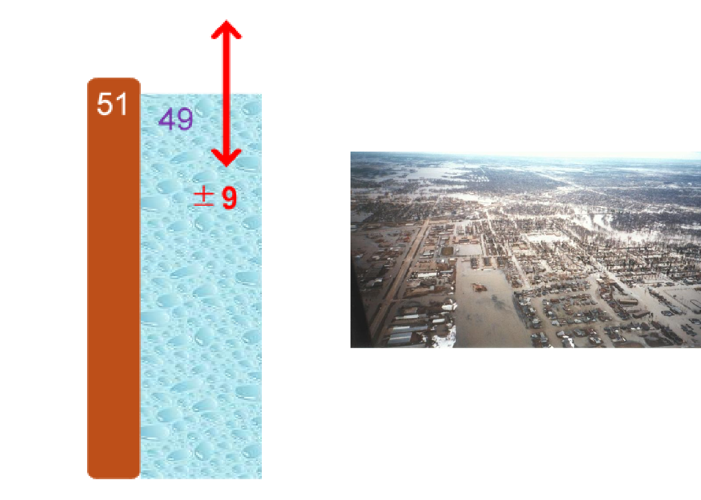

Uncertainty analysis: understanding what you don’t know
Uncertainty is unavoidable when making predictions about future events or impacts of decisions. Our knowledge of the present is typically incomplete; and we can’t be sure what will happen in the future. We can reduce uncertainty due to lack of knowledge by obtaining more information, or asking experts for advice. However, we can’t eliminate uncertainty entirely, so we must find ways to describe and communicate it.
There is a difference between uncertainty and risk; risk typically refers to the likelihood of a future unplanned event or unintended consequence that can be assigned a numeric probability. Forecasts of risk, like other forecasts, are themselves subject to uncertainty. For example, UK Met Office predictions of the risk of rain are uncertain as to whether it will rain at all, as well as uncertainty about how much it will rain. This uncertainty is described using a range from running several forecasts from equally likely initial conditions.
Taking account of uncertainty – and being seen to do so – is important for public trust. We must not pretend that the consequences of a policy or decision are certain: they are always uncertain to some degree. For each option, a range of outcomes are possible. Implying certainty about one particular outcome can damage public trust when things turn out differently.
Why does it matter?
Red River Flood, Grand Forks USA, 1997
Example
The National Weather Service (NWS) predicted, 2 months in advance, the Red River to crest 49 feet.
In response, the levees were built to handle a flood of 51 feet
The actual flood level was 54 feet.
Had the NWS communicated their uncertainty (+/- 9 feet) the several $billion damages as well as the huge personal impact could have been avoided.

This toolkit contains the following chapters:
Before conducting any uncertainty analysis, it is important to check that you understand how the analysis will be used. What type of decision is being made? Are you informing a debate or a final decision? This will frame how you approach the analysis and how you communicate it to your customers.
Considering the whole system that influences your analysis helps identify all possible areas where uncertainty can arise. Ensure you understand what is causing the uncertainty in your inputs and outputs, and whether this can be quantified.
Before conducting uncertainty analysis, you should consider the range of possible techniques. We provide a list of the most common techniques with some examples for reference.
There is little point conducting any analysis if it has no impact, so this is perhaps the most important section. It is important to engage with your decision makers so they take account of uncertainty in any decisions they make. You should think about how you interact with the audience, tailoring your communication to different groups. This will help them to understand the consequences of uncertainty and why they should be interested in it.
x
In the government we respect your concerns about privacy and value the relationship that we have with you.
We use technology on our website to collect information that helps us enhance the experience and tailor our products to our users.
Read the MORE INFORMATION page for further details of what is collected. More info That’s Fine